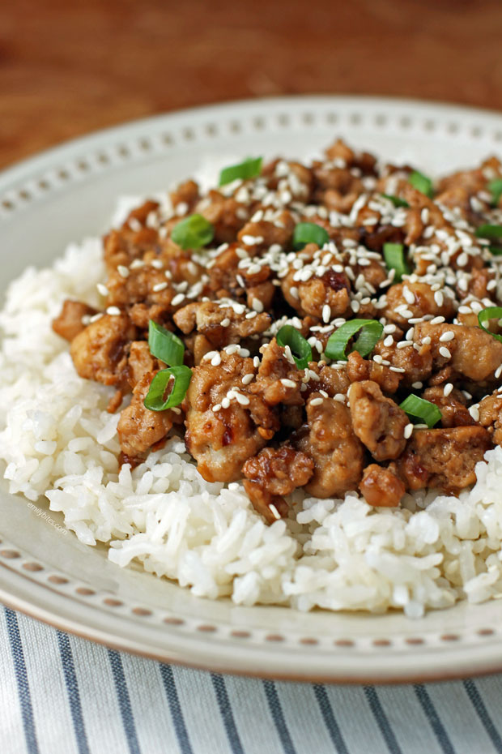

Honey Chicken Recipe

This is a 12 minute chicken breast recipe with a
5 ingredient Honey Garlic Sauce!
This is a perfect recipe for a quick dinner idea for busy nights
that's made with pantry staples
Ingredients
- Flour
- Chicken Breast
- Garlic
- Vinegar
- Soy Sauce
- Honey
- Butter
Steps
- Split chicken breast in half - so 2 breasts makes 4 pieces
- Dust chicken with flour (gives the chicken a crust)
- Sear the chicken on a hot oiled pan
- Add butter, garlic, vinegar, soy sauce, and honey
- Simmer until the sauce thickens. Then turn the chicken to coat in
the amazing honey garlic sauce
- Enjoy!
Ground Turkey Recipe

A simple ground turkey recipe great for meal prepping!
it only requires a few ingredients! Serve with rice and vegetables
of your choosing for a quick and healthy meal!
Ingredients
- Ground Turkey (The less fat the better)
- Salt
- Pepper
- Garlic Powder
- Ground Paprika
- Red Bell Pepper
- Minced Garlic
- Onion
- Oil
Steps
- Chop up half an onion and 3-4 cloves of garlic and it set aside
- Cut up the bell pepper into bite sized pieces
- Add oil to a hot pan and let it heat up
- Fry up the garlic and onion first and let it brown. Then add the
bell pepper and mix everything together
- Add the ground beef to the pan and make it into little pieces. Mix everything together
- Add all the seasonings and let it cook until the ground beef is dark brown
- Enjoy!